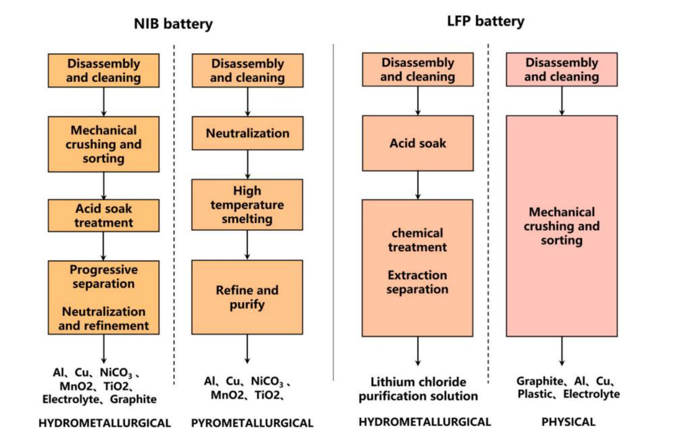

Academic team project
Life Cycle Assessment of Battery Systems
Building an environmental inventory and tracing modelled impacts in two battery supply chains.
- Software
- openLCA
- Period
- September 2023 to January 2024
Introduction
The life cycle assessment (LCA) coursework examined lithium iron phosphate (LFP) and sodium manganese oxide (NMO) battery systems. We traced how assumptions about material production, energy and process links shape the modelled impacts.
Method
Inventory
I compiled material, energy and transport data from secondary sources, including ecoinvent datasets.
Model build
I built the group comparison model in openLCA, connecting inventory inputs to the battery process chains.
My contribution
Data collection and model building were my main responsibilities. I also helped interpret the outputs and prepare parts of the report.


Results
Electricity and process heat were prominent contributors in the model outputs. The contribution links helped the team see which upstream processes accounted for larger shares of the calculated impacts.
The report and software output identify different impact-assessment methods, and the functional unit and system boundaries need to be reconciled. The contribution plots therefore help interpret individual model outputs. Ranking the chemistries would require a consistent basis for comparison.